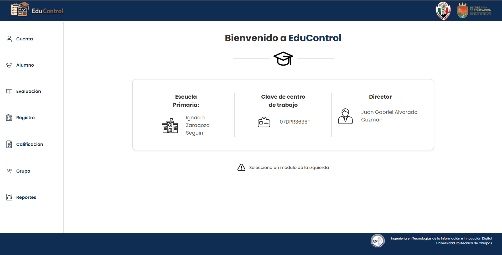
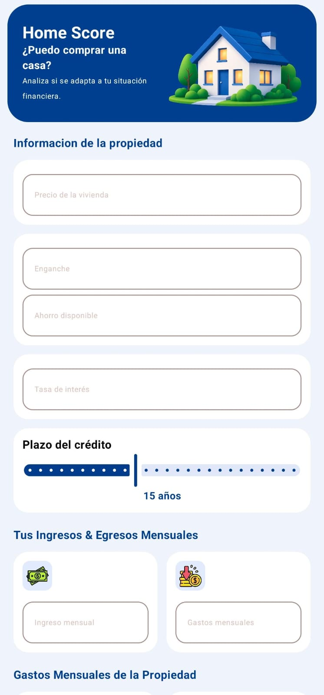
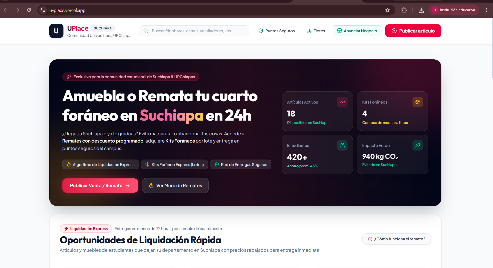
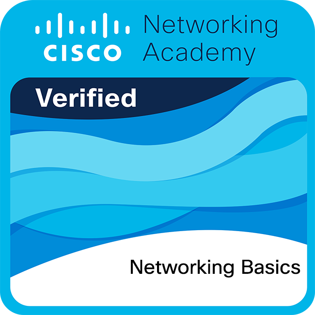
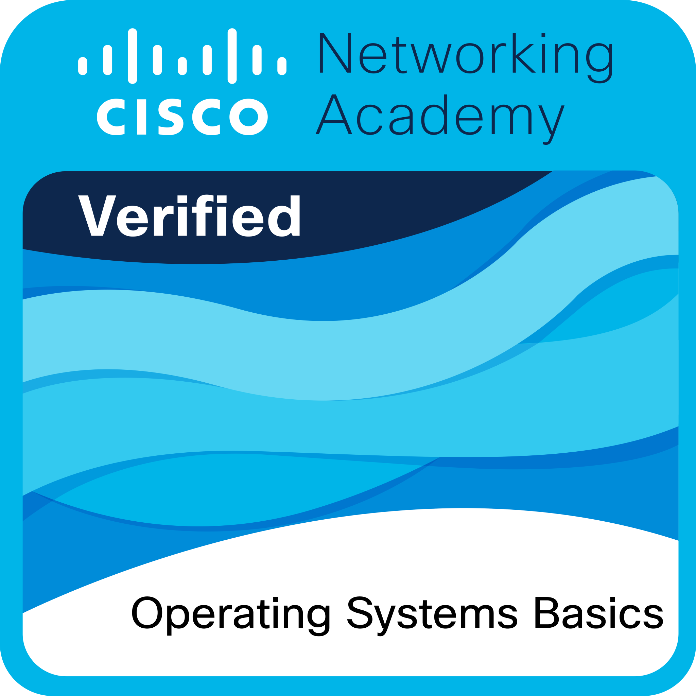

Desarrollo móvil Android
Experiencia de proyecto con Kotlin y componentes de Jetpack Compose.
KotlinJetpack ComposeMVVM
Ingeniería en Tecnología de la Información e Innovación Digital · 4.º cuatrimestre · UPChiapas
Soy estudiante de Ingeniería en Tecnología de la Información e Innovación Digital en la UPChiapas. Me interesa crear soluciones digitales útiles y aprender en cada etapa: comprender una necesidad, colaborar con otras personas y convertir una idea en una experiencia funcional. Actualmente estoy fortaleciendo mis conocimientos en desarrollo móvil y web, y explorando la automatización. Este espacio documenta mi evolución académica y profesional, junto con los aprendizajes que construyo en cada proyecto.
Stack tecnológico y herramientas utilizadas en mis proyectos.
Experiencia de proyecto con Kotlin y componentes de Jetpack Compose.
Participación en proyectos web con tecnologías frontend actuales.
Colaboración en equipos y participación en distintas capas de desarrollo.
Formación inicial en nube, redes, sistemas operativos e Internet de las cosas.
Experiencias de colaboración académica en desarrollo móvil y web.

assets/images/projects/educontrol.pngSistema de gestión escolar · Participación full stack
Colaboré con el equipo en el frontend, backend y base de datos de una plataforma para la gestión escolar. Entre sus módulos están alumnos, evaluaciones, registros, calificaciones, grupos y reportes. El proyecto se desarrolló con HTML, CSS y JavaScript.

assets/images/projects/homeScore.jpegDESARROLLO MÓVIL · ANDROID
Aplicación móvil que ayuda a explorar si una vivienda se ajusta a la situación financiera de una persona. Participé en el equipo de desarrollo con Kotlin, Jetpack Compose y arquitectura MVVM.

assets/images/projects/uplace.pngDESARROLLO WEB · REACT
Plataforma web para la comunidad universitaria de UPChiapas. Colaboré con el equipo en su desarrollo con React. La propuesta reúne publicaciones de estudiantes, remates de artículos, kits para foráneos y opciones de entrega segura dentro de la comunidad.
Insignias y cursos completados durante mi formación académica.
AWS Academy · Insignia de formación
Completado
Cisco Networking Academy · Insignia
Completado

Cisco Networking Academy · Insignia
Completado

Cisco Networking Academy · Insignia
Completado
Conecta conmigo y revisa mis repositorios de código abierto.